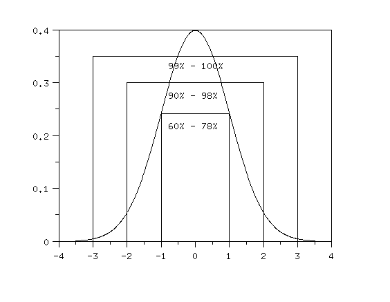

|
3.
Production
Process Characterization
3.1. Introduction to Production Process Characterization 3.1.3. Terminology/Concepts
|
|||
| Variability is present everywhere | All manufacturing and measurement processes exhibit variation. For example, when we take sample data on the output of a process, such as critical dimensions, oxide thickness, or resistivity, we observe that all the values are NOT the same. This results in a collection of observed values distributed about some location value. This is what we call spread or variability. We represent variability numerically with the variance calculation and graphically with a histogram. | ||
| How does the standard deviation describe the spread of the data? |
The standard deviation (square root of the variance)
gives insight into the spread of the data through the use of what is known
as the Empirical Rule. This rule (shown in the graph below) is:
Approximately 60-78% of the data are within a distance of one standard deviation from the average \( (\bar{x} - s, \bar{x} + s) \). Approximately 90-98% of the data are within a distance of two standard deviations from the average \( (\bar{x} - 2s, \bar{x} + 2s) \). More than 99% of the data are within a distance of three standard deviations from the average \( (\bar{x} - 3s, \bar{x} + 3s) \). |
||
|  | |||
| Variability accumulates from many sources | This observed variability is an accumulation of many different sources of variation that have occurred throughout the manufacturing process. One of the more important activities of process characterization is to identify and quantify these various sources of variation so that they may be minimized. | ||
| There are also different types | There are not only different sources of variation, but there are also different types of variation. Two important classifications of variation for the purposes of PPC are controlled variation and uncontrolled variation. | ||
| Click here to see examples |
|
||
| Stable processes only exhibit controlled variation | This concept of controlled/uncontrolled variation is important in determining if a process is stable. A process is deemed stable if it runs in a consistent and predictable manner. This means that the average process value is constant and the variability is controlled. If the variation is uncontrolled, then either the process average is changing or the process variation is changing or both. The first process in the example above is stable; the second is not. | ||
| In the course of process characterization we should endeavor to eliminate all sources of uncontrolled variation. | |||